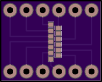
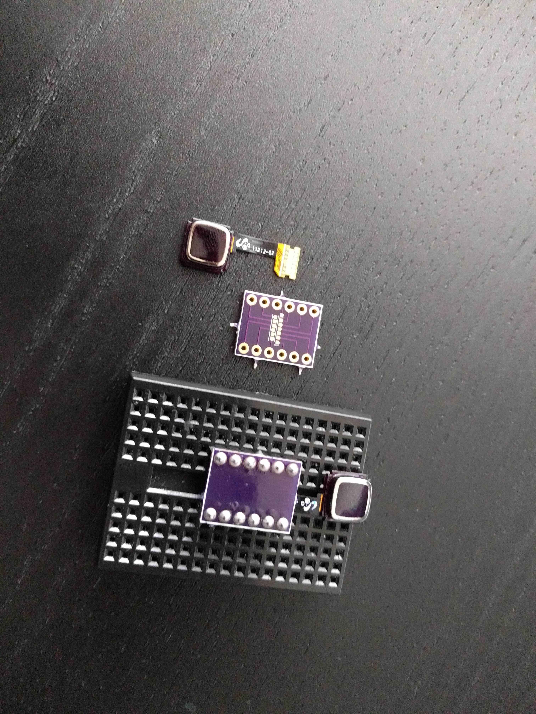

Breakout¶
Published on 2021-06-23 in Home Button for Keyboards.
I quickly designed a very simple PCB breakout for the sensor — just the 12 pads that are connected to something, in random order. I made the pads slightly smaller than the ones on the flex PCB, to give myself some wiggle room. Then I ordered it from my go-to place for small boards: @oshpark .
A few weeks later the boards arrived, and I soldered the sensors up. Turns out that soldering the flex PCB to a regular PCB is not so easy either — not as easy as drag-soldering displays, anyways. But I managed somehow:
It even fits nicely on the mini-breadboard’s flat part, so I can press the button! Next up is connecting all the wires and figuring out which is which. But here, my laziness backfired on me.
You notice I didn’t add any labels to the pins, and that they are broken out in a rather random order — whatever was easiest to route. I didn’t have much energy back then, and I wanted to order those PCBs fast, so they would arrive earlier. I was hoping I will have more energy when the PCBs arrived, and can work around all the corners I cut.
That didn’t happen. I still need to glue a piece of paper to this board, label the pins, and try connecting them. Motivation is a fickle beast, and when I’m facing the prospect of a boring chore, such as trying out all possible pin combinations in the hope that one of them will finally work, my energy levels drop dramatically. I should have foreseen that, but the future always looks so good from back there.
I decided to document this project and write those logs in the hope that it will motivate me to continue this. Will it? Well, we will see shortly, I suppose.